[14-2] 独立看门狗&窗口看门狗 — 学习笔记
一句话结论
14-1 复制 OLED 工程、14-2 复制 14-1；IWDG 16 分频 + IWDG_SetReload(2499)＝1000ms，不必开 LSI；WWDG 必须开 APB1 时钟，WWDG_Enable(0x40 | 54) 使能即首喂，喂太早太晚都复位。
0. 本集定位
- 代码课：承接上一集理论，两个程序从「复制现成工程 → 逐段写码 → 下载验证 → 实测临界值」全流程走完。
- 结尾 31:57「看门狗的知识点到这里也就结束了，那我们下节再见」，无下节主题预告。
- 接线：OLED（I2C）+ PB1 按键，两个程序接线完全一样。
- 复制来源如下（两个不同，别混）：
| 程序 | 复制来源 |
|---|---|
14-1 独立看门狗 |
复制 OLED 显示屏工程 |
14-2 窗口看门狗 |
复制 14-1 独立看门狗 工程（不是 OLED 工程） |
1. 接线与工程准备
- 接线＝OLED 工程接线 + 一个按键（PB1），面包板已事先接好。
14-1工程：复制 OLED 显示屏工程 → 改名14-1 独立看门狗→ 删掉多余内容 → 编译。
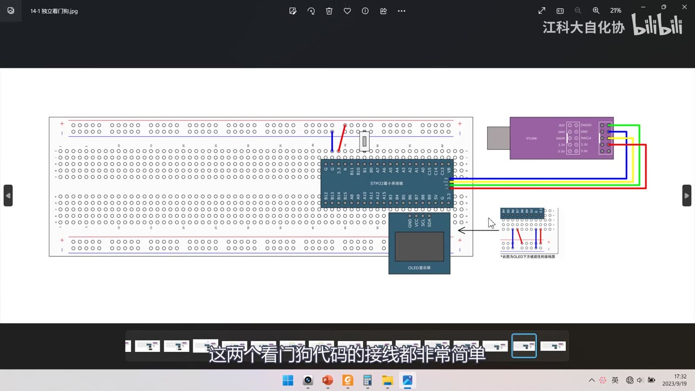
图 1：接线图 14-1 独立看门狗——最小系统板 + ST-Link + OLED（I2C）+ PB1 处的按键；右下角注明 *此图为OLED下方被遮挡的接线图
2. 程序①：14-1 独立看门狗
2.1 配置流程（对照 PPT 框图）
- 从左到右：① 开启 LSI 时钟（这一步不用写代码）→ ② 解除写保护（键寄存器写 0x5555）→ ③ 写入预分频和重装值 → ④ 启动独立看门狗 → ⑤ 主循环不断喂狗。
- 为什么开 LSI 不用写代码：手册 6.2.9 看门狗时钟（在 6.3 章里，位置比较深）明确写「如果独立看门狗已经由硬件选项或软件启动，LSI 振荡器将被强制打开」——启动 IWDG 时 LSI 会被硬件自动强制打开。
- 对照 PPT 的 IWDG 键寄存器表：
0xCCCC启用独立看门狗、0xAAAA喂狗（把 RLR 重新加载到计数器）、0x5555解除 IWDG_PR/IWDG_RLR 写保护、其他值启用写保护。
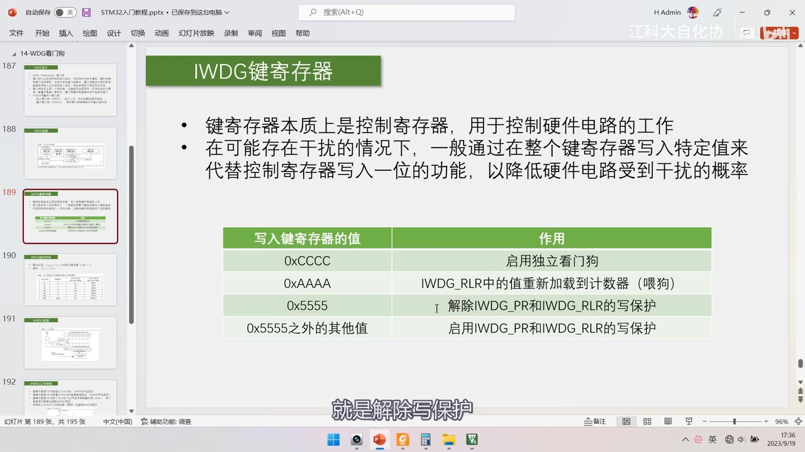
图 2：PPT「IWDG键寄存器」表格——键寄存器本质上是控制寄存器；用整个键寄存器写入特定值代替写一位以降低受干扰概率；0xCCCC 启用、0xAAAA 喂狗、0x5555 解保护
2.2 库函数与宏
stm32f10x_iwdg.h 共 6 个函数：
| 函数 | 作用 |
|---|---|
IWDG_WriteAccessCmd |
写键寄存器：IWDG_WriteAccess_Enable（0x5555 解保护）/ _Disable（0x0000 启用保护） |
IWDG_SetPrescaler |
写 PR：IWDG_Prescaler_4/8/16/32 ＝ 0x00/0x01/0x02/0x03 |
IWDG_SetReload |
写 RLR（12 位重装值） |
IWDG_ReloadCounter |
向键寄存器写 0xAAAA（喂狗） |
IWDG_Enable |
向键寄存器写 0xCCCC（启动） |
IWDG_GetFlagStatus |
读状态标志 |
- 头文件里的宏：
#define IWDG_WriteAccess_Enable ((uint16_t)0x5555)、#define IWDG_WriteAccess_Disable ((uint16_t)0x0000)，以及校验宏IS_IWDG_WRITE_ACCESS(ACCESS)。 - 预分频宏：
#define IWDG_Prescaler_4 ((uint8_t)0x00)、_8 (0x01)、_16 (0x02)、_32 (0x03)。
复位源判断用到 rcc.h 的 RCC_GetFlagStatus，参数分两类：
| 类别 | 参数 |
|---|---|
| 时钟 Ready 类（判断时钟好了没） | RCC_FLAG_HSIRDY / HSERDY / PLLRDY / LSERDY / LSIRDY（RTC 那节用过） |
| Reset 类（判断复位来源） | RCC_FLAG_PINRST（引脚复位）/ PORRST（POR/PDR 复位）/ SFTRST（软件复位）/ IWDGRST（独立看门狗复位）/ WWDGRST（窗口看门狗复位）/ RCC_FLAG_LPWRRST（低功耗复位，库内简写 LPWRRST），简写为 PINRST / PORRST / SFTRST |
- 配套
RCC_ClearFlag()（无参数）清除标志。
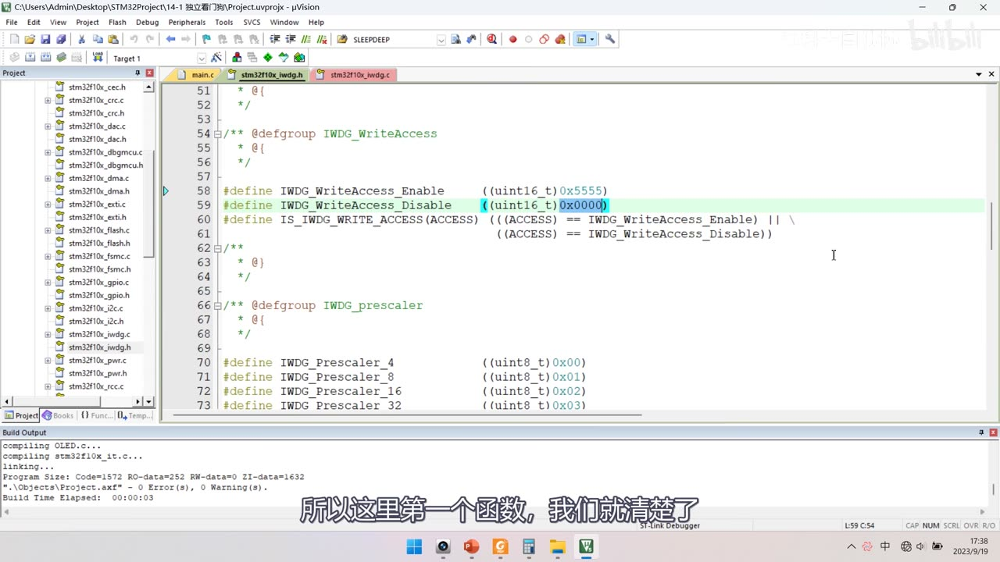
图 3：stm32f10x_iwdg.h 的宏定义——IWDG_WriteAccess_Enable 为 0x5555、_Disable 为 0x0000；IWDG_Prescaler_4/8/16/32 为 0x00/0x01/0x02/0x03
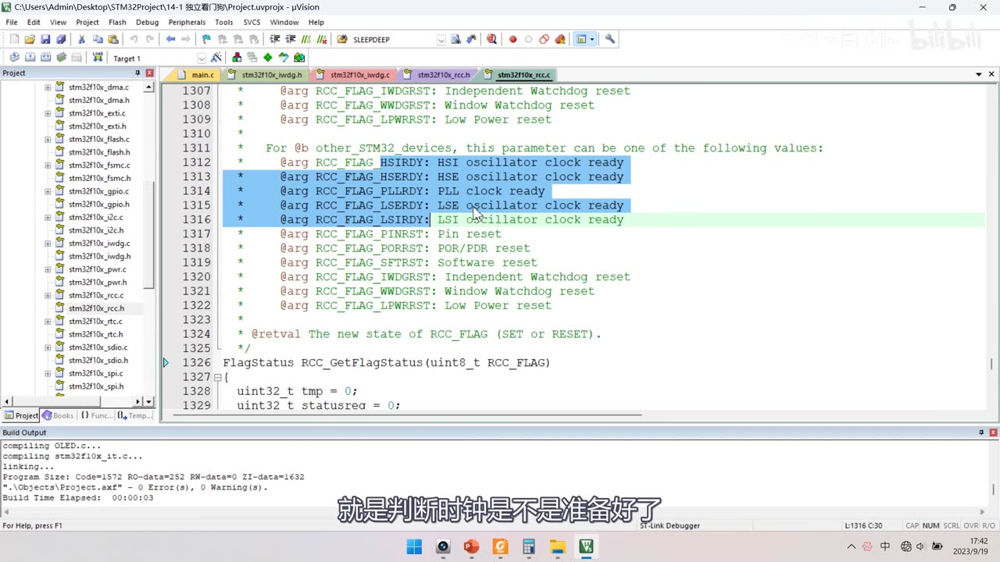
图 4：stm32f10x_rcc.c 里 RCC_GetFlagStatus 的参数注释——Reset 类与时钟 Ready 类（蓝框高亮）
2.3 复位源判断（含必写的坑）
OLED_Init();
OLED_ShowString(1, 1, "IWDG TEST");
if (RCC_GetFlagStatus(RCC_FLAG_IWDGRST) == SET) /* 是看门狗复位？ */
{
OLED_ShowString(2, 1, "IWDGRST");
Delay_ms(500);
OLED_ShowString(2, 1, " ");
Delay_ms(100);
RCC_ClearFlag(); /* 必须清！否则下次复位仍误判 */
}
else
{
OLED_ShowString(3, 1, "RST");
Delay_ms(500);
OLED_ShowString(3, 1, " ");
Delay_ms(100);
}
- 判断写法：先调用
OLED_ShowString(1, 1, "IWDG TEST")显示标题（写进代码带分号：OLED_ShowString(1, 1, "IWDG TEST");），再if (RCC_GetFlagStatus(RCC_FLAG_IWDGRST) == SET)——成立则第 2 行闪IWDG RST，否则第 3 行闪RST。 - 图 5 的完整骨架：
if (RCC_GetFlagStatus(RCC_FLAG_IWDGRST) == SET) { OLED_ShowString(2,1,"IWDGRST"); Delay_ms(500); … Delay_ms(100); **RCC_ClearFlag();** } else { OLED_ShowString(3,1,"RST"); Delay_ms(500); … Delay_ms(100); } while (1)。 - 坑（必须写）：
RCC_ClearFlag()一定要调用——实测即使按下复位键，这个标志位也不会自动清 0。 - 不清的话，下一次复位仍会被判成「看门狗复位」，实验现象就错了。
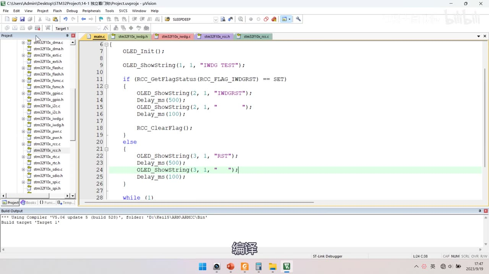
图 5：14-1 main.c 的复位源判断框架——OLED_Init();、OLED_ShowString(1,1,"IWDG TEST")、if/else 两个分支，分支末尾 RCC_ClearFlag();
2.4 初始化四步与参数推导
IWDG_WriteAccessCmd(IWDG_WriteAccess_Enable); /* ① 解除 PR/RLR 写保护（KR=0x5555） */
IWDG_SetPrescaler(IWDG_Prescaler_16); /* ② 16 分频 */
IWDG_SetReload(2499); /* ③ 重装值 → 1000ms */
IWDG_ReloadCounter(); /* ④ 启动前先喂一次（KR=0xAAAA） */
IWDG_Enable(); /* ⑤ 启动（KR=0xCCCC） */
- 写完 PR/RLR 不需要手动恢复写保护：后续写 KR 的其他值（如 0xAAAA/0xCCCC）会自动重新启用保护。
- 参数推导（目标 1000ms）：公式原文
T = 0.025ms × PR系数 × (RL + 1)（不带空格的等价写法T = 0.025ms × PR系数 × (RL+1)），先定分频再算 RL。 - 表83 前两档不够 1000ms：/4 最长 409.6ms、/8 最长 819.2ms，必须剔除（PPT 上打了红叉）。
- /16 及以后都够，优先选小的预分频系数——能更充分利用 12 位计数值、减小 RL 取整误差。
- 选 16 分频 →
RL = 1000 / 0.025 / 16 − 1 = 2500 − 1 = 2499（正好整除，无取整误差）。 - 最终两行（带分号连写）：
IWDG_SetPrescaler(IWDG_Prescaler_16); IWDG_SetReload(2499); //1000ms。 - 拆成单行看：
IWDG_WriteAccessCmd(IWDG_WriteAccess_Enable);→IWDG_SetPrescaler(IWDG_Prescaler_16);→IWDG_SetReload(2499); //1000ms→IWDG_ReloadCounter();→IWDG_Enable();。 - 最终两行：
IWDG_SetPrescaler(IWDG_Prescaler_16)、IWDG_SetReload(2499)；初始化顺序是IWDG_WriteAccessCmd(IWDG_WriteAccess_Enable)→IWDG_SetPrescaler(IWDG_Prescaler_16)→IWDG_SetReload(2499)→IWDG_ReloadCounter()→IWDG_Enable()。
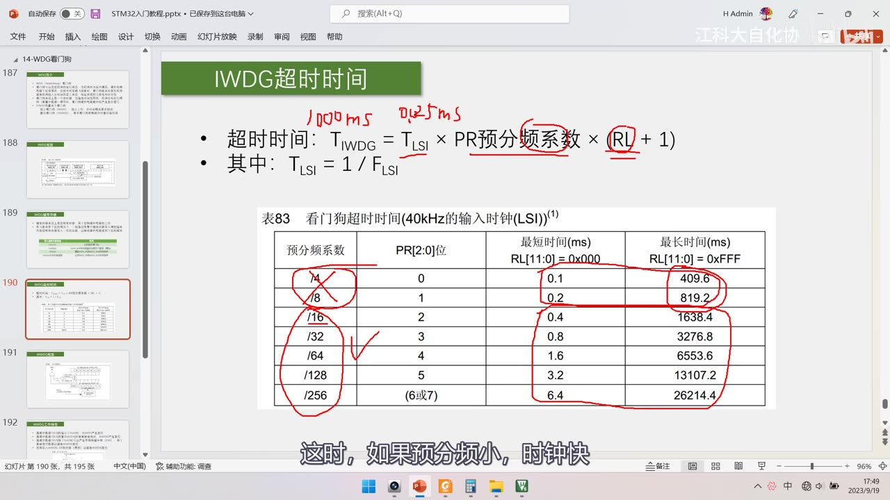
图 6：PPT「IWDG超时时间」+ 表83 红笔推导——红笔写 1000ms、0.025ms；圈出 PR预分频系数 与（RL + 1）；表83 前两行 /4、/8 被打红叉
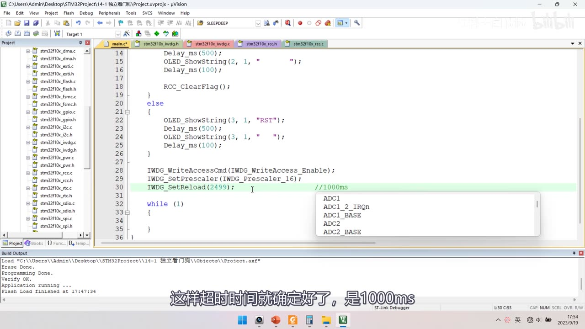
图 7：14-1 main.c 最终初始化参数——解除写保护、16 分频、IWDG_SetReload(2499)（高亮）
2.5 主循环喂狗、现象与临界实测
while (1)
{
Key_GetNum(); /* 阻塞式：按住 PA1/PB1 按键不放，程序就卡在这里 */
IWDG_ReloadCounter(); /* 喂狗 */
OLED_ShowString(4, 1, "FEED");
Delay_ms(200);
OLED_ShowString(4, 1, " ");
Delay_ms(600);
}
- 现象：编译下载后只有第一次上电是正常复位，之后不再复位（喂狗满足要求）；把喂狗间隔改大后不断显示 IWDG 复位。
- 临界实测：喂狗间隔 1000ms 不复位、1010ms 就复位，临界≈1000ms（LSI 本身有误差、代码执行也占时间）。
- 所以实际项目要留时间余量，别卡这么死。
- 完善版：引入
Key.h/Key_Init()，主循环加阻塞式Key_GetNum()模拟程序卡死；FEED闪烁 +Delay_ms(200)+Delay_ms(600)→ 主循环约 800 多 ms，余量约 200ms。 - 三个时间的关系：喂狗间隔 200ms + 600ms ＝ 800ms，小于超时 1000ms，所以留出约 200ms 余量（IWDG 演示 800ms < 1000ms）。
- 解保护那行的简写形式：工程里写作
IWDG_WriteAccessCmd(Enable)，完整枚举名是IWDG_WriteAccess_Enable。 - 演示效果：正常时
FEED不断闪烁；按住 PB1 不放 → 程序卡在按键函数 → 不再喂狗 → 看门狗复位。
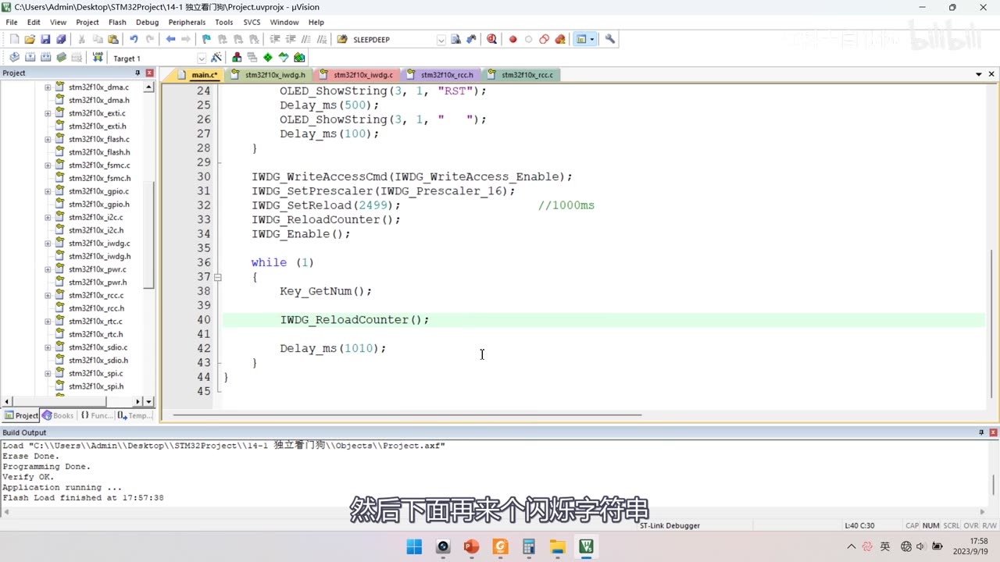
图 8：14-1 完整代码（临界测试版）——四步初始化 + while (1) { Key_GetNum(); IWDG_ReloadCounter(); Delay_ms(1010); }（1010ms 用于测临界）
3. 程序②：14-2 窗口看门狗
3.1 复制来源与工程切换
- 复制
14-1 独立看门狗工程 → 改名14-2 窗口看门狗（不是从 OLED 工程复制）。 - 两个看门狗代码结构差不多，直接在工程上改：复位标志换成
RCC_FLAG_WWDGRST、显示字符串换掉。 - 刚复制完的中间态：
#include "stm32f10x.h"/"Delay.h"/"OLED.h"/"Key.h"、OLED_Init(); Key_Init(); OLED_ShowString(1, 1, "IWDG TEST");，if (RCC_GetFlagStatus(RCC_FLAG_IWDGRST) == SET) { OLED_ShowString(2,1,"IWDGRST"); … }还是 IWDG 的，尚未改成 WWDG。
3.2 stm32f10x_wwdg.h 的 8 个函数
| 函数 | 作用 |
|---|---|
WWDG_DeInit(void) |
恢复缺省配置 |
WWDG_SetPrescaler(uint32_t) |
写预分频（WDGTB[1:0]） |
WWDG_SetWindowValue(uint8_t WindowValue) |
写窗口值（W[6:0]，参数必须 < 0x80） |
WWDG_EnableIT(void) |
无参数，使能早期唤醒中断（EWI） |
WWDG_SetCounter(uint8_t Counter) |
喂狗：直接写计数器 |
WWDG_Enable(uint8_t Counter) |
带参数：使能 + 首次喂狗 |
WWDG_GetFlagStatus / WWDG_ClearFlag |
标志位 |
- 跨工程复用的三个：
WWDG_DeInit（恢复缺省）、WWDG_EnableIT（开 EWI）、WWDG_GetFlagStatus。 - 头文件里的完整签名：
WWDG_SetPrescaler(uint32_t WWDG_Prescaler)、WWDG_GetFlagStatus(void)、WWDG_ClearFlag(void)。 - 为什么
WWDG_Enable要带参数：手册 18.3 说递减计数器是自由运行的——使能时计数值可能是任意值，若刚使能时计数值已经低于 0x40（或高于窗口），使能瞬间就会产生复位，所以这个函数必须同时把计数器值写进去。 - 手册 18.3 原文：「如果看门狗被启动（WWDG_CR 寄存器中的 WDGA 位被置 1），并且当 7 位（T[6:0]）递减计数器从 0x40 翻转到 0x3F（T6 位清零）时，则产生一个复位；如果软件在计数器值大于窗口寄存器中的数值时重新装载计数器，将产生一个复位」。
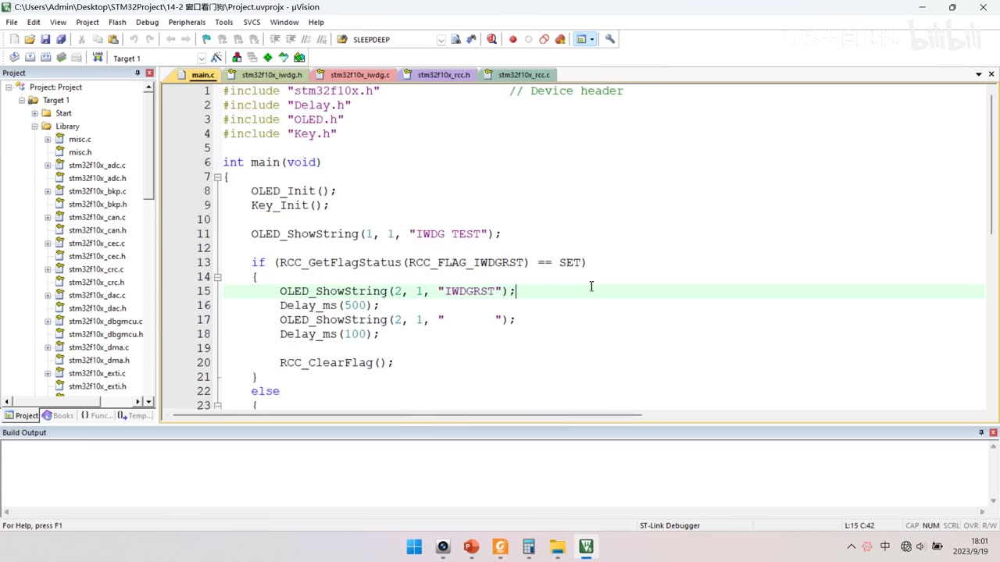
图 9：中间态帧——14-2 工程刚复制完：字符串与复位标志还是 IWDG 的，尚未改成 WWDG（过程帧，不是最终代码）
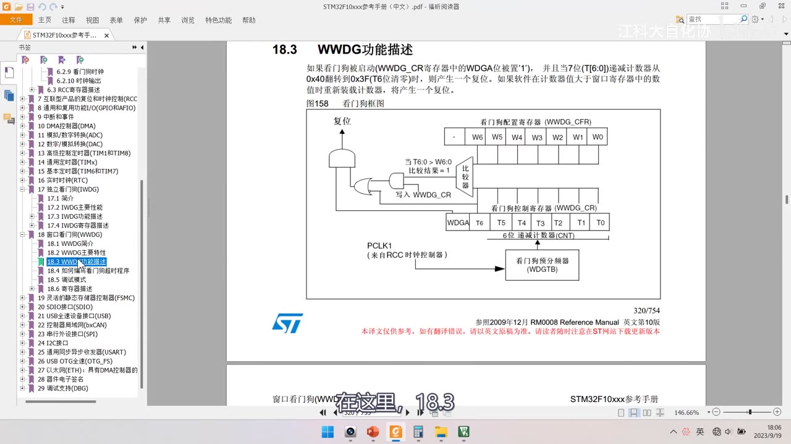
图 10：手册「18.3 WWDG功能描述」原文 + 图158——WDGA 置 1 后计数器从 0x40 翻转到 0x3F（T6 清零）时复位；计数器值大于窗口寄存器时重装也复位
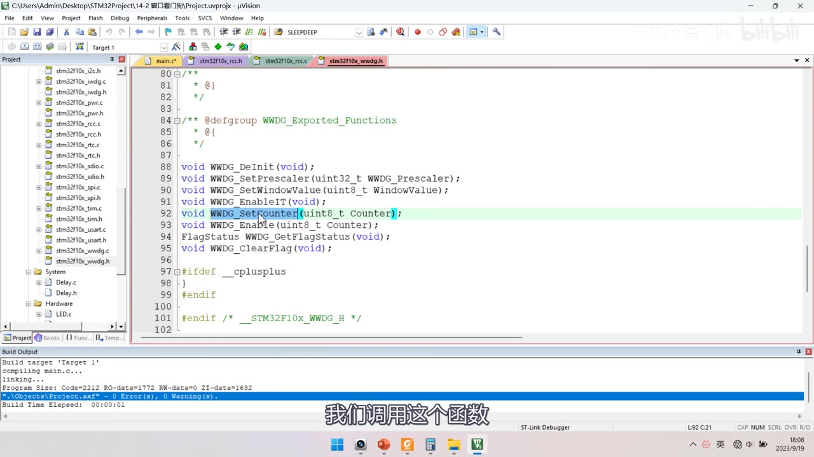
图 11：stm32f10x_wwdg.h 的 8 个函数声明——DeInit、SetPrescaler、SetWindowValue、EnableIT、SetCounter、Enable、GetFlagStatus、ClearFlag
3.3 配置流程与参数推导
/* ① 必须手动开启 WWDG 的 APB1（PCLK1）时钟 */
RCC_APB1PeriphClockCmd(RCC_APB1Periph_WWDG, ENABLE);
/* ② 配预分频与窗口值（WWDG 没有写保护，可直接写） */
WWDG_SetPrescaler(WWDG_Prescaler_8); /* WDGTB = 3 → 8 分频 */
WWDG_SetWindowValue(0x40 | 21); /* //30ms 窗口值 W[5:0] = 21 */
/* ③ 使能 + 首次喂狗（T6 必须置 1） */
WWDG_Enable(0x40 | 54); /* //50ms T[5:0] = 54 */
- ① 开时钟：WWDG 挂在 APB1（PCLK1）上、不像 IWDG 那样会被硬件自动开，所以必须手动
RCC_APB1PeriphClockCmd(RCC_APB1Periph_WWDG, ENABLE)。 - 参数推导（目标：超时 50ms、窗口 30ms）：
- 超时 50ms → 只能选 WDGTB＝3（8 分频）：手册表前三档最大只有 7.28 / 14.56 / 29.12ms，都不够 50ms；WDGTB＝3 最大 58.25ms——WWDG 的超时上限就是 58.25ms。
- 超时：
50ms ÷ (1/36MHz) ÷ 4096 ÷ 8 = 54.9 → 取整 55，因公式用(T[5:0]+1)，所以T[5:0] + 1 = 55→T[5:0] = 54，即T[5:0] = 55 − 1 = 54。 - 窗口：
30ms ÷ (1/36MHz) ÷ 4096 ÷ 8 = 32.9 → 取整 33→T[5:0] − W[5:0] = 33→W[5:0] = 54 − 33 = 21。 - T6 必须置 1：所以最终写
0x40 | 54与0x40 | 21（54 与 21 都没触及次高位，|与+等效）。
- 三句落笔：
WWDG_SetPrescaler(WWDG_Prescaler_8)、WWDG_SetWindowValue(0x40 | 21)、WWDG_Enable(0x40 | 54)；喂狗时写WWDG_SetCounter(0x40 | 54)。 - 带分号与注释的最终两行：
WWDG_SetWindowValue(0x40 | 21); //30ms、WWDG_Enable(0x40 | 54); //50ms；带分号的时钟句RCC_APB1PeriphClockCmd(RCC_APB1Periph_WWDG, ENABLE);、WWDG_SetPrescaler(WWDG_Prescaler_8);。 - 公式原文（全角括号版）：
T_WWDG = T_PCLK1 × 4096 × WDGTB预分频系数 × (T（5:0） + 1)、T_WIN = T_PCLK1 × 4096 × WDGTB预分频系数 × (T（5:0） − W（5:0）)；半角版：T_WWDG = T_PCLK1 × 4096 × WDGTB预分频系数 × (T[5:0] + 1)、T_WIN = T_PCLK1 × 4096 × WDGTB预分频系数 × (T[5:0] − W[5:0])。 - 手册表（PCLK1＝36MHz）：WDGTB 0/1/2/3 → 最小 113µs / 227µs / 455µs / 910µs，最大 7.28ms / 14.56ms / 29.12ms / 58.25ms。
- 中间态编译报错：
WWDG_SetWindowValue();、WWDG_SetCounter();缺参数，WWDG_Enable(54);尚未带 T6 位——报错原文error: too few arguments to function call, single argument 'Counter' was not specified。
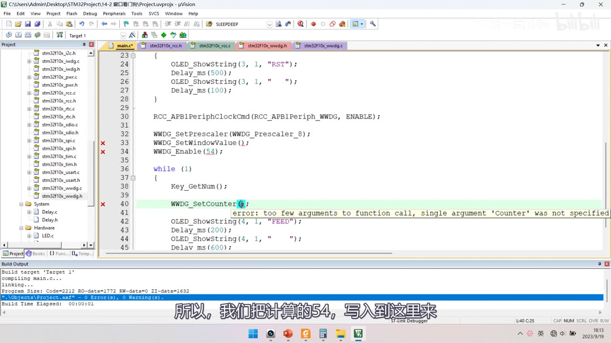
图 12：中间态帧——WWDG 初始化参数没填全、编译报错：WWDG_SetWindowValue(); 与 WWDG_SetCounter(); 报参数不足
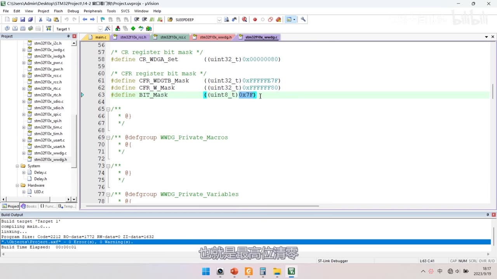
图 13：stm32f10x_wwdg.c 的掩码宏——CR_WDGA_Set 为 0x00000080；CFR_WDGTB_Mask、CFR_W_Mask；BIT_Mask 为 0x7F（高亮）
3.4 库内部对 CR 的操作与「读-改-写」
WWDG_Enable：CR |= CR_WDGA_Set（0x80，最高位置 1）；WWDG_SetCounter：CR = Counter & BIT_Mask（0x7F，最高位清 0）。- 疑问：喂狗会把使能位（WDGA）写 0，会不会顺手把看门狗关掉？不会——看门狗开启后无法关闭，写 0 无效，所以
WWDG_SetCounter不需要「读-改-写」。 - 「读-改-写」三步法（以
WWDG_SetPrescaler为例）：①tmpreg = WWDG->CFR & CFR_WDGTB_Mask;（读出并清掉 WDGTB[1:0]）②tmpreg |= WWDG_Prescaler;（只改这两位）③WWDG->CFR = tmpreg;（写回）。 - 源码原样（全角括号注释版）：
uint32_t tmpreg = 0;、assert_param(IS_WWDG_PRESCALER(WWDG_Prescaler));、/* Clear WDGTB（1:0） bits */ tmpreg = WWDG->CFR & CFR_WDGTB_Mask;、/* Set WDGTB（1:0） bits according to WWDG_Prescaler value */ tmpreg |= WWDG_Prescaler;、/* Store the new value */ WWDG->CFR = tmpreg;。 - 同一段源码的方括号注释版：
/* Clear WDGTB[1:0] bits */ tmpreg = WWDG->CFR & CFR_WDGTB_Mask;、/* Set WDGTB[1:0] bits according to WWDG_Prescaler value */ tmpreg |= WWDG_Prescaler;。 - 掩码宏：
/* CR register bit mask */ **#define CR_WDGA_Set ((uint32_t)0x00000080)**、/* CFR register bit mask */ #define CFR_WDGTB_Mask ((uint32_t)0xFFFFFF7F)、#define CFR_W_Mask ((uint32_t)0xFFFFFF80)、#define BIT_Mask ((uint8_t)0x7F)。 - 好处：只改指定几位、不影响其他位；连续改多次效率高；最终改动同时生效。
- 这套写法全靠
&=清位、|=置位两步组合。
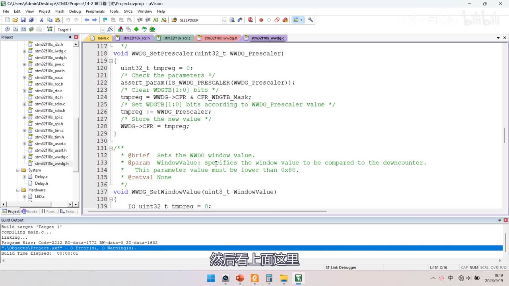
图 14：WWDG_SetPrescaler 源码（标准「读-改-写」）——清 WDGTB（1:0）位、按参数置位、写回；下方 WWDG_SetWindowValue 注释参数必须小于 0x80
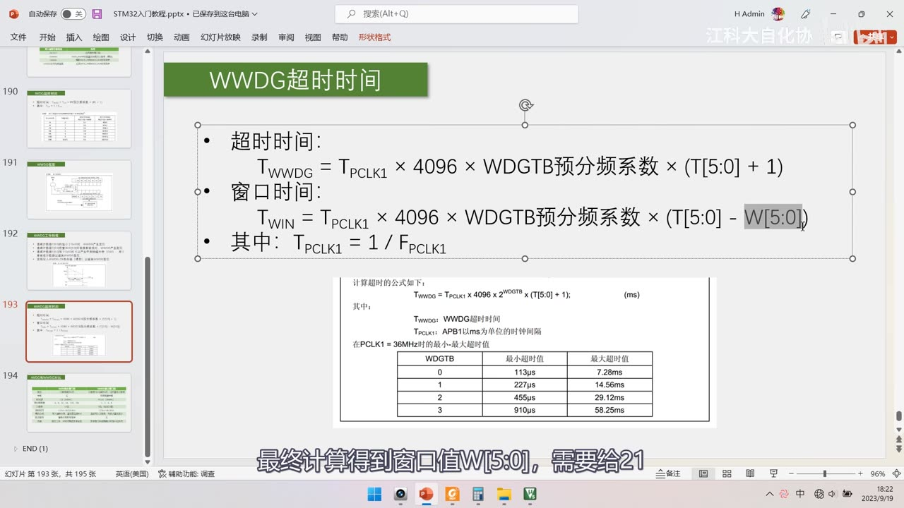
图 15：PPT「WWDG超时时间」+ 手册表——T_WWDG 与 T_WIN 两条公式（灰底高亮 W[5:0]）；WDGTB 0/1/2/3 的超时范围
3.5 两个大坑与实测验证
坑①：使能后立刻再喂第二次 → 死循环复位
/* ✗ 踩坑版：喂狗在循环开头，紧贴 WWDG_Enable 之后 */
WWDG_Enable(0x40 | 54);
while (1)
{
Key_GetNum();
WWDG_SetCounter(0x40 | 54); /* ← 距上次「使能时喂狗」不到 30ms → 复位 */
OLED_ShowString(4, 1, "FEED");
Delay_ms(20);
OLED_ShowString(4, 1, " ");
Delay_ms(20);
}
- 原因：
WWDG_Enable已经喂过一次，主循环第一句紧接着又喂，两次间隔 < 窗口下界 30ms → 判为「喂太早」→ 复位，于是反复复位（看起来像死循环）。 - 踩坑版循环原文：
while (1) { Key_GetNum(); WWDG_SetCounter(0x40 | 54); OLED_ShowString(4,1,"FEED"); Delay_ms(20); … Delay_ms(20); }。 - 修法 A：调整顺序，先延时 20ms + 20ms 再喂（把喂狗移到两次
Delay_ms(20)之后）：
/* ✓ 修复版：喂狗在延时之后 */
while (1)
{
Key_GetNum();
OLED_ShowString(4, 1, "FEED");
Delay_ms(20);
OLED_ShowString(4, 1, " ");
Delay_ms(20); /* 累计 40ms 左右，进入允许窗口 */
WWDG_SetCounter(0x40 | 54); /* 现在喂狗才合法 */
}
- 修法 B：加「首次/非首次」标志位判断，首次不喂、后续正常喂。
- 修复版循环原文：
while (1) { Key_GetNum(); OLED_ShowString(4,1,"FEED"); Delay_ms(20); OLED_ShowString(4,1," "); Delay_ms(20); **WWDG_SetCounter(0x40 | 54);** }。 - 坑②：喂狗太快、太慢都会复位——这正是窗口看门狗与独立看门狗的核心区别（IWDG 只要不超时就行；WWDG 还要不能太早）。
实测验证：
| 测试 | 结果 |
|---|---|
| Delay 改 30ms | 不停复位（喂太早，落在窗口下界以下） |
| Delay 改 31ms | 不复位（窗口下界≈30ms ✓） |
| 超时改 49ms | 不复位（上界≈50ms ✓） |
- 现象：正常时 OLED 显示
WWDG TEST，第 4 行FEED闪烁；喂狗时机不对则显示WWDG RST并反复复位。
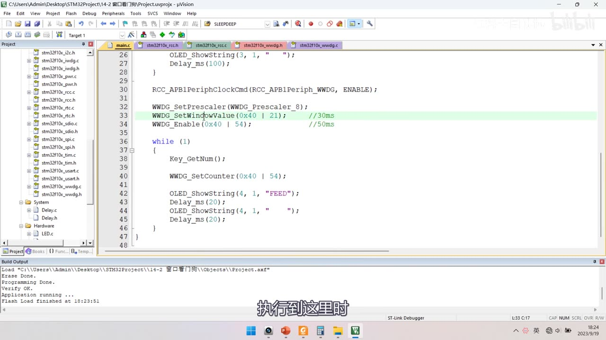
图 16：踩坑版代码（喂狗写在循环开头）——紧随使能后再喂 → 间隔不足 30ms → 反复复位
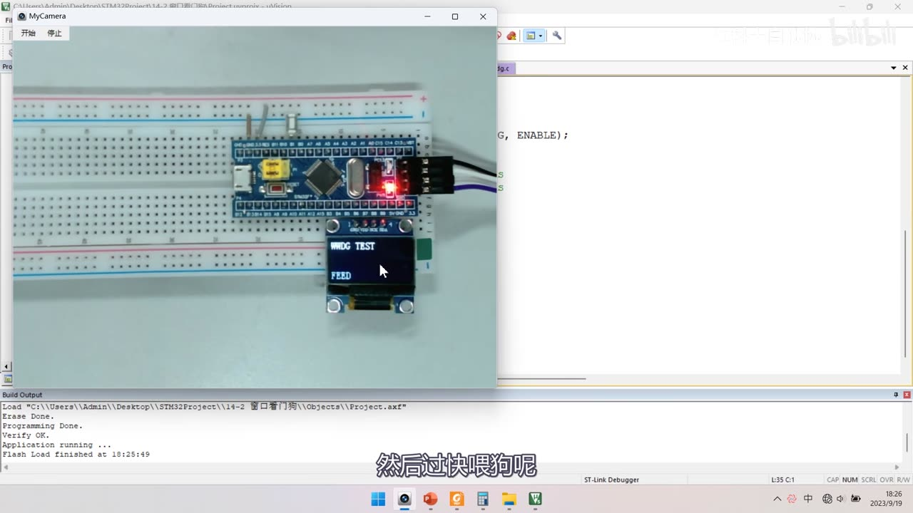
图 17：程序②现象——OLED 显示 WWDG TEST 与第 4 行 FEED
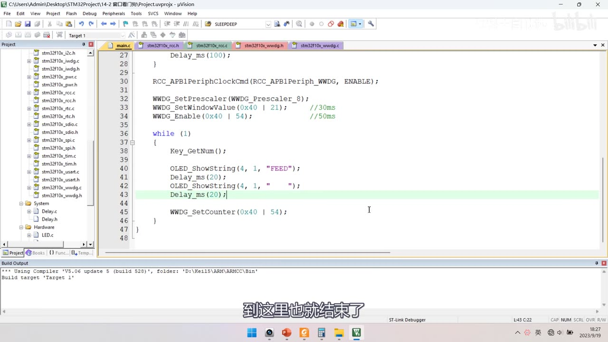
图 18：修复版代码（喂狗移到两次延时之后）——延时 20+20＝40ms 后再 WWDG_SetCounter(0x40 | 54)
坑与易错点
- 两个工程复制来源不同：
14-1←OLED 显示屏工程；14-2←复制14-1（不是 OLED）。 - IWDG 不必手动开 LSI（手册 6.2.9：启动 IWDG 后 LSI 被强制打开）；WWDG 必须手动
RCC_APB1PeriphClockCmd(RCC_APB1Periph_WWDG, ENABLE)。 RCC_ClearFlag()必须调用：按复位键标志位也不会自动清 0，不清会一直误判成看门狗复位。- IWDG 参数推导：表83 前两档（409.6/819.2ms）不够 1000ms 必须剔除；优先小预分频减小 RL 取整误差；选 /16 →
RL = 1000/0.025/16 − 1 = 2499（整除无误差）。 - 实测 IWDG 临界≈1000ms（1000ms 不复位、1010ms 复位）——项目里要留余量。
WWDG_Enable带参数＝使能 + 首次喂狗：计数器自由运行，使能瞬间值任意，不喂就立即复位；IWDG_Enable()无参。- WWDG 参数推导写全：超时 50ms → 只能 WDGTB=3（8 分频，前 3 档最大 29.12ms）→
50/(1/36M)/4096/8 = 54.9 → 55→T[5:0]=54；窗口 30ms →30/… = 32.9 → 33→ W = 54−33 = 21。 - T6 必须置 1：
0x40 | 54、0x40 | 21（|与+在本例等效，但用|更稳）。 - 坑① 使能后立刻再喂 → 死循环复位（间隔 < 30ms 下界）；先延时 40ms 再喂或加首次标志位。
- 坑② 喂狗太快、太慢都复位——WWDG 与 IWDG 的核心区别。
WWDG_SetCounter把 CR 最高位写 0，但关不掉看门狗 → 不需要「读-改-写」；WWDG_Enable用CR |= 0x80，SetCounter用CR = v & 0x7F。- 中间态帧别当最终代码：
f_00130（字符串仍是IWDG TEST）、f_00060（if/else 空壳）、f_00180（参数未填、编译报错）都是过程帧。 - 复位源判断的两个参数：
RCC_FLAG_IWDGRST（IWDG）/RCC_FLAG_WWDGRST（WWDG），别写混。 WWDG_SetWindowValue参数必须 < 0x80（库注释明确）。